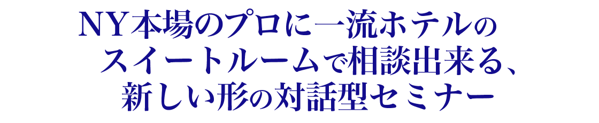

あのアメリカ漫画の大人気キャラクターポパイがNFTになりました！
Popeye漫画シリーズのキャラクターから、ガールフレンドのオリーブ・オイル、敵役の巨漢ブルート、ハンバーガー好きのウィンピー、神秘的な動物ジープ、かなり賢く言葉を話す赤ん坊スウィーピーなど豪華で楽しいNFTが登場します。


ポパイ（Popeye）
膨らんだ前腕、意地悪なアッパーカット、缶詰のほうれん草が大好きな弱者。
気取らない、洗練されていない、挑戦にとらわれない彼は、コミック ストリップのシンブル シアターに足を踏み入れた瞬間から、彼の有名な「私はカウボーイだと思いますか?」とつぶやきました。
セーラーマンのポパイは、世界中の何百万人ものファンの心を捉えました。大画面と小画面での彼自身の漫画やアニメシリーズのスターとして、ポパイはアメリカ文化に急速に浸透し、今日でも世界で最も有名なポップカルチャーのアイコンの1つです。


オリーブ・オイル（Olive Oyl）
ポパイの恋人。ニューヨーク州ニューヨーク出身、年齢は29歳。痩せっぽちで決して美人とはいえない（フェイマス・スタジオ版では、そのエピソードで初対面設定のブルートやポパイが「大変な美人」と一目惚れするシーンも多い）が、牧場や店を興したりなどして自活しているしっかり者の女性。
気が強いところもあり、ポパイがだらしない態度をとるとブルートへ浮気に走ることもあるが最終的にポパイのところに戻ることが多い。二人に振り回されて痛い目によくあう。彼女も缶詰のほうれん草を食べるとパワーが出せ、ポパイの代わりに危機的状況を打開したこともある。新シリーズではブルートに浮気する描写がほとんどなくなった。


スウィーピー（Swee'Pea）
ポパイの養子になった甥っ子。
かなり賢く、言葉を話す。時折目を放した隙に危険な場所へ出歩き、騒動を起こしてはポパイ達を困らせている。実はデモニア国の皇太子という設定。
育ての老婆が病弱の為に育児が出来なくなってしまい赤ん坊を手放すことを知った時はあまりの悲しさに号泣した。その後はポパイやオリーブに拾われ、無事に育てられることになる。


ブルート/ブルータス（Bruto/Brutus）
ポパイの同僚の水兵で恋敵。カリフォルニア州ハリウッド出身、年齢は36歳。身長2メートルを越すヒゲ面の大男。ポパイ以上の腕っ節の強さを持つ。強引で手加減知らずの乱暴な性格だが悪知恵だけは働き、力押しが通用しない相手には搦め手で出し抜こうとする。
ポパイと仲良くしている事が多いが、オリーブに惚れており、ポパイから何とか奪い取ろうと画策しすぐに喧嘩を始める。最初はお人よしのポパイを騙して出し抜いたり、腕力で圧倒して危機的状況に陥れることが多いが、最後には必ずほうれん草を食べたポパイにやられている。


ウィンピー（Wimpy）
太った中年男性。無類のハンバーガー好きで、いつも片手に食べかけのハンバーガーを持ち歩いている。ハンバーガー欲しさにポパイに金をせびる事も。
本名はJ.ウェリントン・ウィンピー（J. Wellington Wimpy）。ポパイと同じく、カリフォルニア州サンタモニカ出身、年齢は34歳。彼の名にちなんだハンバーガーチェーン「ウインピー」が存在する。


ジープ（Jeep、Eugene the Jeep）
5次元から来たポパイの魔法のペット。
犬に似たミステリアスな動物。超能力を持っており、瞬間移動や予言をしたりする。第2次世界大戦時にアメリカが開発した4輪駆動車「ジープ」の名は、ここから採られたという説もある。英語版では本名「ユージーン・ザ・ジープ（ジープのユージーン）」。


貴重な画像ばかりが揃っています。
ポパイはタフで、フィット感があり、根性があります。彼は彼がヤムするものをヤムします—常に挑戦に立ち向かい、決して後退しない頑丈な船乗りです。ポパイの健康的でアクティブなライフスタイルは、彼に自信を与え、どんな機会にも立ち向かいます. そして、強さとフィットネスの具現化として、彼は私たち全員に、懸命に働き、粘り強く、大量のほうれん草の助けを借りて最後まで強くあり続けるように促します。
そして、世界中のファンにインスピレーションを与えることを目指しています。